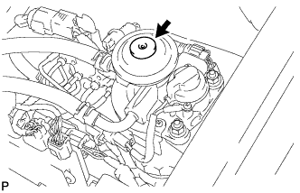
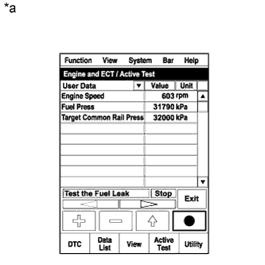

ОХЛАДИТЕЛЬ ТОПЛИВА > УСТАНОВКА |
| 1. УСТАНОВИТЕ ОХЛАДИТЕЛЬ ТОПЛИВА |
Установите охладитель топлива и закрепите его 3 гайками.
Подсоедините 2 топливных шланга.
| 2. УДАЛИТЕ ВОЗДУХ ИЗ ТОПЛИВНОЙ СИСТЕМЫ |
|  |
С помощью ручного насоса, установленного на крышке топливного фильтра, удалите воздух из топливной системы. Продолжайте прокачку, пока сопротивление насоса при работе не возрастет.
Запустите двигатель.
Если двигатель запускается, перейдите к следующему шагу.
Если запуск двигателя невозможен, прокачайте систему снова с помощью ручного насоса до повышения сопротивления насоса (см. процедуры выше). Затем запустите двигатель.
Выключите зажигание.
Подсоедините портативный диагностический прибор к DLC3.
Включите зажигание (IG) и портативный диагностический прибор.
Сбросьте коды DTC (Нажмите здесь).
Запустите двигатель.*1
|  |
Войдите в следующие меню: Powertrain / Engine and ECT / Active Test / Test the Fuel Leak.*2
| *a | Для справки Испытание в режиме Active Test |
Выполните следующее испытание 5 раз с интервалами включения/выключения 10 с: Active Test / Test the Fuel Leak.*3
После 5-го испытания в режиме Active Test дайте двигателю поработать на холостом ходу в течение не менее 3 мин.
Войдите в следующие меню: Powertrain / Engine and ECT / DTC.
Считайте текущие коды DTC.
Сбросьте коды DTC (Нажмите здесь).
Повторите операции с *1 по *3.
Войдите в следующие меню: Powertrain / Engine and ECT / DTC.
Считайте текущие коды DTC.
| 3. ПРОВЕРЬТЕ, НЕТ ЛИ УТЕЧЕК ТОПЛИВА |